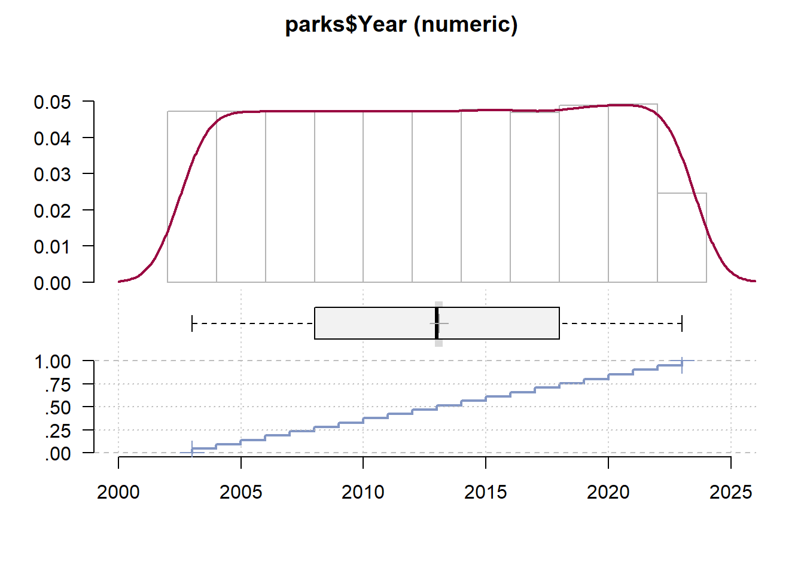
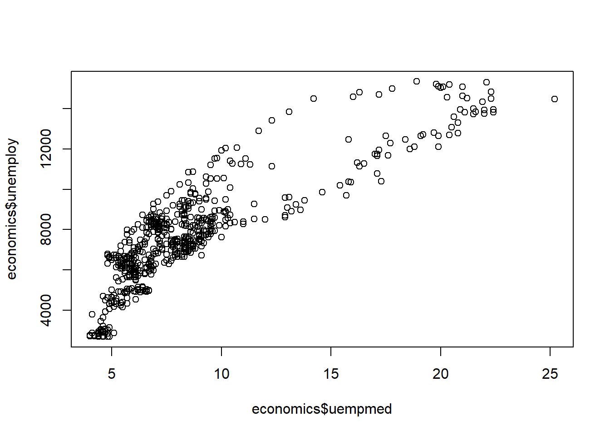
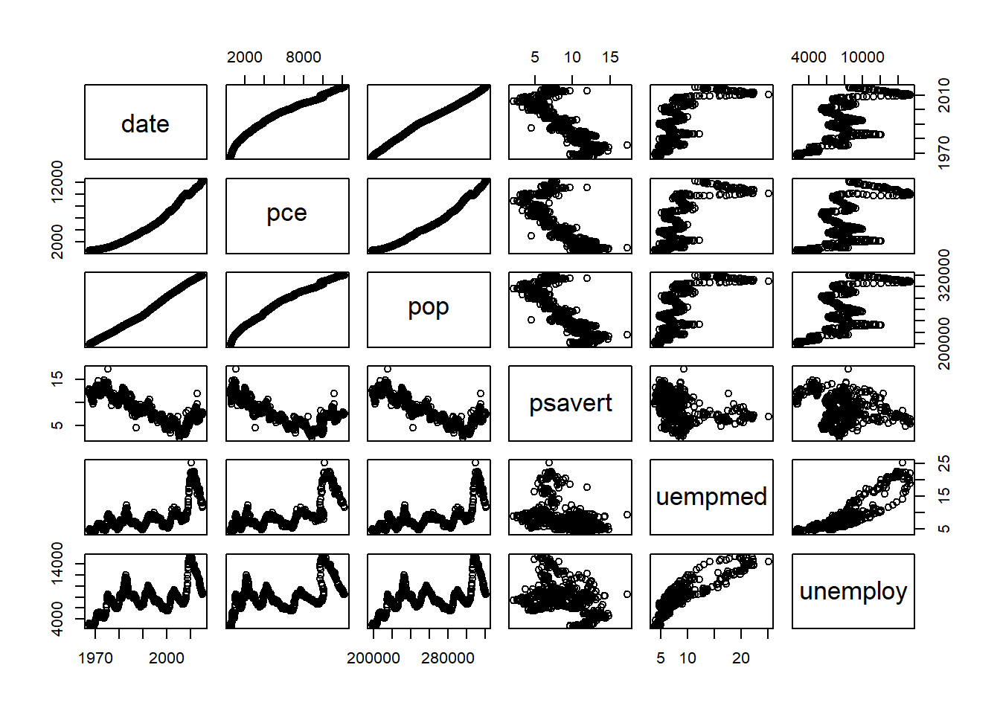

library(readr)
url <- paste0("https://data.ny.gov/api/views/8f3n",
"-xj78/rows.csv?accessType=DOWNLOAD") # Assign URL: "url"
parks <- read_csv(url) # Read in data: "parks"10 Exploring Data
10.1 Key Concepts
In this chapter, we’ll explore the following key concepts and functions:
- Exploratory Data Analysis (EDA) & Initial Data Analysis (IDA)
str()nrow()ncol()dim()length()rownames()colnames()names()class()levels()head()tail()summary()View()?&help()Desc()glimpse()
- Contingency Tables for Frequency & Proportionality
table()prop.table()ftable()
- Exploratory Data Visualization (EDV)
hist()boxplot()plot()pairs()par()ggpairs()(GGally)
- Functions for Descriptive Stats:
mean()median()min()max()var()quantile()
- Tabulating Summary Output
- Grouping & Summary Operations with dplyr
%>%filter()select()group_by()summarize()ungroup()
10.2 New Packages
This chapter uses the following packages (in order of appearance):
10.3 Key Takeaways
Too long; didn’t read? Here’s what you need to know:
- Initial and Exploratory Data Analysis (IDA; EDA) are key to exploring new data
- Key functions:
str()for structure,summary()for descriptive stats
- Key functions:
- Exploratory Data Visualization (EDV) is critical for exploratory analysis
- Key functions:
plot(),hist(),boxplot(),pairs()
- Key functions:
- Descriptive statistics functions describe quantitative data
- Key functions:
mean(),median(),min(),max()
- Key functions:
- Package dplyr makes it easy to summarize grouped variables
- Key functions:
%>%pipes data,group_by(),summarize() - Example:
data %>% group_by(variable) %>% summarize(count = n()) - Don’t forget to use
ungroup()
- Key functions:
10.4 Exploratory Data Analysis
Exploratory Data Analysis (EDA) is the implementation of exploratory techniques to better understand new data. Typically, EDA uses visualizing and summarizing functions to detect patterns and anomalies in data beyond initial hypotheses and research questions.
Practice Data: To demonstrate, we’ll use state park annual attendance from the State of New York’s Office for Parks, Recreation, and Historic Preservation (OPRHP).
10.4.1 Common Initial Analysis Techniques
Base R has a litany of functions commonly used in Initial Data Analysis, or IDA.
- IDA is the opening salvo of functions in Exploratory Data Analysis.
- IDA techniques aid in understanding the nuances of your data.
Data Structure: Function str() is a go-to function for understanding:
- The class of the dataset, e.g. matrix or data.frame
- The dimensions of a dataset (rows and columns)
- The class of each variable in the dataset
- The first several values of each variable
- The levels in each factor variable
str(parks)Classes 'spec_tbl_df', 'tbl_df', 'tbl' and 'data.frame': 5007 obs. of 5 variables:
$ Year : num 2023 2023 2023 2023 2023 ...
$ OPRHP Region: chr "Allegany" "Allegany" "Allegany" "Allegany" ...
$ County : chr "Cattaraugus" "Cattaraugus" "Chautauqua" "Chautauqua" ...
$ Facility : chr "Allegany Quaker Area" "Allegany Red House Area" "Barcelona Lighthouse" "Lake Erie St Pk" ...
$ Attendance : num 792323 707529 18019 91967 152695 ...
- attr(*, "spec")=List of 3
..$ cols :List of 5
.. ..$ Year : list()
.. .. ..- attr(*, "class")= chr [1:2] "collector_double" "collector"
.. ..$ OPRHP Region: list()
.. .. ..- attr(*, "class")= chr [1:2] "collector_character" "collector"
.. ..$ County : list()
.. .. ..- attr(*, "class")= chr [1:2] "collector_character" "collector"
.. ..$ Facility : list()
.. .. ..- attr(*, "class")= chr [1:2] "collector_character" "collector"
.. ..$ Attendance : list()
.. .. ..- attr(*, "class")= chr [1:2] "collector_double" "collector"
..$ default: list()
.. ..- attr(*, "class")= chr [1:2] "collector_guess" "collector"
..$ delim : chr ","
..- attr(*, "class")= chr "col_spec"
- attr(*, "problems")=<externalptr> Dimensions: Like measuring width and height, we can do the same with datasets:
- Function
nrow()prints the total number of rows - Function
ncol()prints the total number of columns - Function
dim()prints the total number of rows and columns
Recall that in R, dimensions are printed or specified with rows first, then columns.
nrow(parks) # Print total rows[1] 5007ncol(parks) # Print total columns[1] 5dim(parks) # Print rows and columns[1] 5007 5Length: Function length() prints the number of values for a single variable or vector.
length(parks$Facility)[1] 5007Row & Column Names: Three functions are ideal for printing row and column names:
- Function
rownames()prints the names of each row, though rows are rarely named - Function
colnames()prints the names of each column (i.e. variable) - Function
names()also prints the names of each variable - Rename variables by assigning new names to their output
rownames(parks)[1:5] # Print row names 1-5[1] "1" "2" "3" "4" "5"colnames(parks) # Print variable names[1] "Year" "OPRHP Region" "County" "Facility" "Attendance" names(parks) # Print variable names[1] "Year" "OPRHP Region" "County" "Facility" "Attendance" names(parks) <- c("Year", "Region", "County",
"Facility", "Attendance") # Reassign new names
names(parks) # Print new names[1] "Year" "Region" "County" "Facility" "Attendance"Classes: We can determine the class of any object using function class().
- Determine classes of entire datasets
- Determine classes of individual variables
- Determine classes of other objects, e.g. models
class(parks) # Dataset class[1] "spec_tbl_df" "tbl_df" "tbl" "data.frame" class(parks$Year) # Variable class[1] "numeric"model <- lm(Attendance ~ Year + Region,
data = parks) # Assign linear model
class(model) # Model class[1] "lm"Categorical Levels: Print each category (“level”) of factor variables with levels():
fctr <- as.factor(parks$Region) # Coerce to "factor"
levels(fctr) # Print levels [1] "Allegany" "Central" "Finger Lakes" "Genesee"
[5] "Long Island" "New York City" "Niagara" "Palisades"
[9] "Saratoga" "Saratoga/Capital" "Taconic" "Thousand Islands"First & Last Observations: Functions head() and tail() print first and last rows:
- Function
head()prints the first rows of your data - Function
tail()prints the last rows of your data - Specify the number of rows with argument
n = - By default, six rows are printed
head(parks, n = 3) # Print first 3 rows Year Region County Facility Attendance
1 2023 Allegany Cattaraugus Allegany Quaker Area 792323
2 2023 Allegany Cattaraugus Allegany Red House Area 707529
3 2023 Allegany Chautauqua Barcelona Lighthouse 18019tail(parks, n = 3) # Print last 3 rows Year Region County Facility
5005 2003 Thousand Islands St Lawrence Robert Moses St Pk - Thousand Islands
5006 2003 Thousand Islands St Lawrence St Lawrence Golf Course
5007 2003 Thousand Islands St Lawrence Wilson Hill Boat Launch
Attendance
5005 260797
5006 18226
5007 15289Summaries: Function summary() describes individual variables according to their class:
- Class numeric, integer, or double prints descriptive statistics
- Class character includes total values and missing values
- Class factor tallies the total occurences in each level
summary(parks) Year Region County Facility
Min. :2003 Length:5007 Length:5007 Length:5007
1st Qu.:2008 Class :character Class :character Class :character
Median :2013 Mode :character Mode :character Mode :character
Mean :2013
3rd Qu.:2018
Max. :2023
Attendance
Min. : 0
1st Qu.: 20177
Median : 63934
Mean : 271216
3rd Qu.: 203393
Max. :9596491 View Interactively: In RStudio, function View() presents data in an interactive table.
View(parks)
View() in RStudio’s IDE.Documentation: If data are from an R package, ? or help() opens documentation.
library(ggplot2) # Load package containing data
?economics # Open documentation with `?`
help(economics) # Open documentation with help()
? or help().
10.4.2 Techniques for Tallies & Proportions
Many functions allow tallying frequencies and proportions for character and factor variables.
Contingency Tables: Function table() prints total of occurrences for qualitative values.
These tables are also called Contingency Tables.
table(parks$Region)
Allegany Central Finger Lakes Genesee
121 544 586 250
Long Island New York City Niagara Palisades
626 198 378 702
Saratoga Saratoga/Capital Taconic Thousand Islands
322 162 389 729 Proportionality: Function prop.table(), with table() output, shows proportionality.
regions <- table(parks$Region) # Assign `table()` output: "regions"
prop.table(regions) # Print proportionality
Allegany Central Finger Lakes Genesee
0.02416617 0.10864789 0.11703615 0.04993010
Long Island New York City Niagara Palisades
0.12502497 0.03954464 0.07549431 0.14020371
Saratoga Saratoga/Capital Taconic Thousand Islands
0.06430997 0.03235470 0.07769123 0.14559617 Functions table() or prop.table() can also weigh variables against eachother.
subset <- parks[, c("Year", "Region")] # Subset two variables
table(subset)[, 1:5] # Frequency of "regions" 1-5 Region
Year Allegany Central Finger Lakes Genesee Long Island
2003 5 26 28 12 29
2004 5 26 28 12 29
2005 5 26 28 12 29
2006 5 26 28 12 29
2007 5 26 28 12 29
2008 5 26 28 12 29
2009 5 26 28 12 29
2010 5 26 28 12 29
2011 5 26 28 12 29
2012 5 26 28 12 29
2013 5 26 28 12 29
2014 5 26 28 12 29
2015 6 26 28 12 29
2016 6 26 28 12 29
2017 7 25 27 11 31
2018 7 25 27 11 31
2019 7 26 28 12 31
2020 7 26 28 12 31
2021 7 26 28 12 32
2022 7 26 28 12 32
2023 7 26 28 12 32output <- table(subset) # Assign `table()` output
prop.table(output)[, 1:5] # Proportionality of "regions" 1-5 Region
Year Allegany Central Finger Lakes Genesee Long Island
2003 0.000998602 0.005192730 0.005592171 0.002396645 0.005791891
2004 0.000998602 0.005192730 0.005592171 0.002396645 0.005791891
2005 0.000998602 0.005192730 0.005592171 0.002396645 0.005791891
2006 0.000998602 0.005192730 0.005592171 0.002396645 0.005791891
2007 0.000998602 0.005192730 0.005592171 0.002396645 0.005791891
2008 0.000998602 0.005192730 0.005592171 0.002396645 0.005791891
2009 0.000998602 0.005192730 0.005592171 0.002396645 0.005791891
2010 0.000998602 0.005192730 0.005592171 0.002396645 0.005791891
2011 0.000998602 0.005192730 0.005592171 0.002396645 0.005791891
2012 0.000998602 0.005192730 0.005592171 0.002396645 0.005791891
2013 0.000998602 0.005192730 0.005592171 0.002396645 0.005791891
2014 0.000998602 0.005192730 0.005592171 0.002396645 0.005791891
2015 0.001198322 0.005192730 0.005592171 0.002396645 0.005791891
2016 0.001198322 0.005192730 0.005592171 0.002396645 0.005791891
2017 0.001398043 0.004993010 0.005392451 0.002196924 0.006191332
2018 0.001398043 0.004993010 0.005392451 0.002196924 0.006191332
2019 0.001398043 0.005192730 0.005592171 0.002396645 0.006191332
2020 0.001398043 0.005192730 0.005592171 0.002396645 0.006191332
2021 0.001398043 0.005192730 0.005592171 0.002396645 0.006391053
2022 0.001398043 0.005192730 0.005592171 0.002396645 0.006391053
2023 0.001398043 0.005192730 0.005592171 0.002396645 0.006391053
10.4.3 Initial Analysis Techniques from Packages
Many R packages are helpful in Initial Data Analysis, e.g. DescTools and dplyr.
Advanced Summaries: In DescTools, function Desc() is an enhanced summary().
library(DescTools)
Desc(parks$Year) # Function `Desc()` on a quantitative variable------------------------------------------------------------------------------
parks$Year (numeric)
length n NAs unique 0s mean meanCI'
5'007 5'007 0 21 0 2'013.08 2'012.91
100.0% 0.0% 0.0% 2'013.25
.05 .10 .25 median .75 .90 .95
2'004.00 2'005.00 2'008.00 2'013.00 2'018.00 2'021.00 2'022.00
range sd vcoef mad IQR skew kurt
20.00 6.08 0.00 7.41 10.00 -0.01 -1.21
lowest : 2'003.0 (236), 2'004.0 (236), 2'005.0 (236), 2'006.0 (236), 2'007.0 (236)
highest: 2'019.0 (245), 2'020.0 (244), 2'021.0 (246), 2'022.0 (246), 2'023.0 (246)
' 95%-CI (classic)
Desc(parks$Region) # Function `Desc()` on a qualitative variable------------------------------------------------------------------------------
parks$Region (character)
length n NAs unique levels dupes
5'007 5'007 0 12 12 y
100.0% 0.0%
level freq perc cumfreq cumperc
1 Thousand Islands 729 14.6% 729 14.6%
2 Palisades 702 14.0% 1'431 28.6%
3 Long Island 626 12.5% 2'057 41.1%
4 Finger Lakes 586 11.7% 2'643 52.8%
5 Central 544 10.9% 3'187 63.7%
6 Taconic 389 7.8% 3'576 71.4%
7 Niagara 378 7.5% 3'954 79.0%
8 Saratoga 322 6.4% 4'276 85.4%
9 Genesee 250 5.0% 4'526 90.4%
10 New York City 198 4.0% 4'724 94.3%
11 Saratoga/Capital 162 3.2% 4'886 97.6%
12 Allegany 121 2.4% 5'007 100.0%
Advanced Structures: In dplyr, function glimpse() is a more organized str().
library(dplyr)
glimpse(parks)Rows: 5,007
Columns: 5
$ Year <dbl> 2023, 2023, 2023, 2023, 2023, 2023, 2023, 2023, 2023, 2023,…
$ Region <chr> "Allegany", "Allegany", "Allegany", "Allegany", "Allegany",…
$ County <chr> "Cattaraugus", "Cattaraugus", "Chautauqua", "Chautauqua", "…
$ Facility <chr> "Allegany Quaker Area", "Allegany Red House Area", "Barcelo…
$ Attendance <dbl> 792323, 707529, 18019, 91967, 152695, 110265, 36725, 235154…
10.5 Exploratory Data Visualization
Exploratory Data Visualization or EDV is critical to exploratory analyses.
- Allows “quick and dirty” visualizations of your new data’s variables
- Used internally to benefit yourself, collaborators, or specialized audiences
- Assists analysts in decoding and identifying patterns and anomalies in new data
10.5.1 Common Exploratory Visualization Techniques
Several functions exist for exploring data visually in base R.
Histograms: Quickly view the distribution of quantitative variables with hist().
- Histograms are univariate and show the freqency of a range of numeric values
- Increase their resolution by increasing the number of ranges (
breaks =)
hist(parks$Attendance, # Specify a single variable
breaks = 100) # Specify number of breaks and "bins"
Box Plots: View several distributions across categorical variables with boxplot().
- The beginning and end of boxplots represent the first and third quartiles, resp.
- The width of the box, itself, is the Interquartile Range, or IQR
- The middle of each boxplot represents the median (50%)
- “Whiskers” are calculated by
1.5 * IQR - Outliers are demarcated beyond whiskers
- Both variables are separated with
~
boxplot(parks$Attendance ~ parks$Region)
Scatter Plots: View relationships between quantitative variables with plot().
Since parks only contains one quantitative variable, we use economics from ggplot2.
library(ggplot2)
plot(x = economics$uempmed, # Median duration of unemployment, in weeks
y = economics$unemploy) # Number of unemployed, in thousands
Pairs Plots: Pairs plots create a matrix of small multiples for each variable.
- Small multiples allow multiple side-by-side comparisons of plots on common axes
- Depending on the class of each variable, different plot methods are used
Again, for want of class numeric variables, we use economics from ggplot2.
library(ggplot2)
pairs(x = economics)
Model Summaries: Function plot(), used with a model, produces four summary plots.
- By adjusting the global graphics parameters of base R, we can print all four
- In function
par(), specify total rows and columns in functionc() - Argument
mfrow =accepts these two values in functionpar()
model <- lm(Attendance ~ Year + Region,
data = parks) # Create linear model: "model"
par(mfrow = c(2, 2)) # Specify dimensions in `par()`
plot(model) # Call `plot()` on model
Advanced Pairs Plots: Use package ggplot2 extension GGally and ggpairs().
As a more colorful example, we’ll use base R dataset iris.
library(ggplot2)
library(GGally) # Load packages
ggpairs(iris, # Specify dataset
aes(color = Species)) + # Map colors to variable "Species"
theme_minimal() # Preset theme cleans output
10.6 Descriptive Statistics
Descriptive or Summary Statistics concisely describe datasets or individual variables with summary information, e.g. mean, median, mode, minimum value, maxium value, variance, and more.
While descriptive statistics can be the be-all and end-all of a descriptive analysis, they’re also integral to exploratory data analysis.
10.6.1 Common Functions for Descriptive Statistics
Again, base R has no shortage of functions for descriptive or summary statistics.
Mean: The average or mean value of quantitative data is calculated with mean().
mean(parks$Attendance)[1] 271216Median: Find the value of the 50th percentile, or median, with median().
median(parks$Attendance)[1] 63934Minima & Maxima: Find the smallest and largest values with min() and max().
min(parks$Attendance) # The smallest value in variable "Attendance"[1] 0max(parks$Attendance) # The largest value in variable "Attendance"[1] 9596491Variance: Determine the variance of quantitative values with var().
var(parks$Attendance)[1] 670166256405Quantiles: Get quantiles, or the value at 0, 25, 50, 75, and 100%, with quantile().
quantile(parks$Attendance) 0% 25% 50% 75% 100%
0 20177 63934 203393 9596491
10.7 WARNING: SUMMARY STATISTICS & MISSING VALUES
If the quantitative data you intend to summarize contains missing values (
NA), the output may not appear as expected.To tell R that missing values exist, and to exclude them from calculation, simply set argument
na.rm =toTRUE.
10.7.1 Tabulating Descriptive Statistics
Tabulate descriptive statistics from summary() output with data.frame().
Why? This provides an easy method to tabulate and write summary statistics to a file.
sumstats <- summary(parks) # Assign summary() output: "park_stats"
sumstats <- data.frame(sumstats) # Coerce to data frame
sumstats[, 2:3] # Print data frame Var2 Freq
1 Year Min. :2003
2 Year 1st Qu.:2008
3 Year Median :2013
4 Year Mean :2013
5 Year 3rd Qu.:2018
6 Year Max. :2023
7 Region Length:5007
8 Region Class :character
9 Region Mode :character
10 Region <NA>
11 Region <NA>
12 Region <NA>
13 County Length:5007
14 County Class :character
15 County Mode :character
16 County <NA>
17 County <NA>
18 County <NA>
19 Facility Length:5007
20 Facility Class :character
21 Facility Mode :character
22 Facility <NA>
23 Facility <NA>
24 Facility <NA>
25 Attendance Min. : 0
26 Attendance 1st Qu.: 20177
27 Attendance Median : 63934
28 Attendance Mean : 271216
29 Attendance 3rd Qu.: 203393
30 Attendance Max. :9596491
10.8 Group-Wise Summaries in Base R
So far, we’ve look at a veriety of ways to explore and summarize datasets and individual variables.
However, you may often seek to summarize and compare subsets of data that are grouped by some common value, category, or label. The following explores how to group and describe data by one or more specified characteristics.
10.8.1 Tabulating Contingency Tables
In Section 1.1: Exploratory Data Analysis, we learned about contingency tables.
- Contingency tables tally the frequency of values for each category in your data
- Calculated with function
table()
- Calculated with function
- Proportional contingency tables tally the proportion of each category
- Calulated with the output of
table()in functionprop.table()
- Calulated with the output of
In order to tabulate contingency tables in their own data frames:
- Flatten them with
ftable()instead oftable() - Convert the output to a data frame with
data.frame()
reg_freq <- ftable(parks$Region) # Assign `ftable()` output: "reg_freq"
data.frame(reg_freq) # Enter output in `data.frame()` Var1 Freq
1 Allegany 121
2 Central 544
3 Finger Lakes 586
4 Genesee 250
5 Long Island 626
6 New York City 198
7 Niagara 378
8 Palisades 702
9 Saratoga 322
10 Saratoga/Capital 162
11 Taconic 389
12 Thousand Islands 729Likewise, for proportional contingency tables:
- Flatten them with
ftable()instead oftable() - Call
prop.table()on the output offtable() - Convert to a data frame with
data.frame()
reg_freq <- ftable(parks$Region) # Assign `ftable()` output: "reg_freq"
reg_prop <- prop.table(reg_freq) # Assign `prop.table()` output: "reg_prop"
data.frame(reg_prop) # Enter output in `data.frame()` Var1 Freq
1 Allegany 0.02416617
2 Central 0.10864789
3 Finger Lakes 0.11703615
4 Genesee 0.04993010
5 Long Island 0.12502497
6 New York City 0.03954464
7 Niagara 0.07549431
8 Palisades 0.14020371
9 Saratoga 0.06430997
10 Saratoga/Capital 0.03235470
11 Taconic 0.07769123
12 Thousand Islands 0.14559617
10.8.2 Contingency Tables & Group-Wise Frequencies
Comign soon…
10.8.3 Apply Functions & Group-Wise Operations
Comign soon…
10.8.4 Aggregation & Group-Wise Operations
Comign soon…
10.9 Group-Wise Operations with dplyr
Package dplyr is a unified framework built explicitly for data manipulation in R, e.g.:
- Reordering rows based on one or more variables
- Performing complex filtering and additive joins
- Selecting, reordering, and renaming variables in a data frame
- Filtering rows by specified conditional statements and logical operators
- Grouping rows by one or more specified variables and summarizing their values
We explore most of theis elsewhere. Here, we focus on group-wise operations.
But first, we’ll provide a brief overview of dplyr syntax.
10.9.1 Package dplyr Syntax
Package dplyr has a somewhat nuanced syntax that is easy to master. Pay attention:
Piping: Package dplyr uses the pipe operator, or %>%, which:
- Passes data frames through some new function, emerging as an altered data frame
- Begins with a data frame input in the left hand side
- Ends with a data frame output from the right hand side
parks %>% # Specify data frame and pipe
filter(Facility == "Allegany Red House Area") # Pass via function `filter()`# A tibble: 21 × 5
Year Region County Facility Attendance
<dbl> <chr> <chr> <chr> <dbl>
1 2023 Allegany Cattaraugus Allegany Red House Area 707529
2 2022 Allegany Cattaraugus Allegany Red House Area 712217
3 2021 Allegany Cattaraugus Allegany Red House Area 745792
4 2020 Allegany Cattaraugus Allegany Red House Area 665081
5 2019 Allegany Cattaraugus Allegany Red House Area 718483
6 2018 Allegany Cattaraugus Allegany Red House Area 712217
7 2017 Allegany Cattaraugus Allegany Red House Area 730926
8 2016 Allegany Cattaraugus Allegany Red House Area 715179
9 2015 Allegany Cattaraugus Allegany Red House Area 750751
10 2014 Allegany Cattaraugus Allegany Red House Area 686068
# ℹ 11 more rowsBare Variable Names: Once the dataset is named, you need not type it again.
- R recognizes when the data frame has been called
- Therefore, variables need only be named, without the
dataset$xnotation
names(parks)[1] "Year" "Region" "County" "Facility" "Attendance"parks %>% # Call dataset object name
select(Year, Region, Attendance) # Use bare variable names# A tibble: 5,007 × 3
Year Region Attendance
<dbl> <chr> <dbl>
1 2023 Allegany 792323
2 2023 Allegany 707529
3 2023 Allegany 18019
4 2023 Allegany 91967
5 2023 Allegany 152695
6 2023 Allegany 110265
7 2023 Allegany 36725
8 2023 Central 235154
9 2023 Central 67994
10 2023 Central 60649
# ℹ 4,997 more rowsTibbles: When passed through dplyr functions, they become tibbles.
- Tibbles are truncated printouts of data frames
- Typically, tibbles print the first ten observations
- Tibbles also provide both dimensions and variable classes
- Any unprinted observations are summarized underneath the first ten
- With a large amount of variables, tibbles print only what fits on-screen
- Like unprinted observations, variables that do not fit on-screen are summarized
10.9.2 Grouping by Variables
In dplyr, function group_by() accepts the bare names of one or more variables.
Notably, grouping does nothing by itself. Data must be piped into a new function.
parks %>%
group_by(Year) # Grouping by a single variable: "Year"
parks %>%
group_by(Region, Year) # Grouping by two variables: "Region", "Year"
10.9.3 Group By-Summarize Operations
As noted, we must use a function to operate on grouped data.
- Function
summarize()allows us to make new variables on grouped data - Within
summarize(), the basic formula is:new_variable = function(existing_variable)
Here, we create new variable Average from existing variable Attendance:
parks %>% # Invoke "parks"
group_by(Year) %>% # Group by "Year"
summarize(Average = mean(Attendance)) # Create "Average" with `mean()`# A tibble: 21 × 2
Year Average
<dbl> <dbl>
1 2003 220094.
2 2004 223606.
3 2005 235422.
4 2006 230406.
5 2007 240452.
6 2008 231775.
7 2009 240104.
8 2010 244485.
9 2011 242465.
10 2012 255553.
# ℹ 11 more rowsMultiple Summary Variables: Create multiple new variables in one summarize() call.
parks %>%
group_by(Year) %>%
summarize(Mean = mean(Attendance),
Median = median(Attendance),
Maximum = max(Attendance),
Records = n()) # Create multiple new variables# A tibble: 21 × 5
Year Mean Median Maximum Records
<dbl> <dbl> <dbl> <dbl> <int>
1 2003 220094. 48199 7390268 236
2 2004 223606. 47764 7779887 236
3 2005 235422. 50426. 7762999 236
4 2006 230406. 50374. 7756133 236
5 2007 240452. 61394. 7924083 236
6 2008 231775. 57804. 7925725 236
7 2009 240104. 60405 8130765 236
8 2010 244485. 58895 8274942 236
9 2011 242465. 54960 8448914 236
10 2012 255553. 62370. 8690962 236
# ℹ 11 more rowsMultiple Grouping Variables: We can use multiple variables in group_by().
- Creates summaries for each permutation of unique values
- Suppose we group by one variable with 5 categories and one with 10
- Total permutations equals
5 * 10, or 50 groups
- Note, also, that not grouping on variables will drop ungrouped variables
- In other words, grouping by
X, notY, meansYis then excluded
- In other words, grouping by
parks %>%
group_by(Year, Region) %>% # Group on variables "Year", "Region"
summarize(Mean = mean(Attendance),
Median = median(Attendance))# A tibble: 231 × 4
# Groups: Year [21]
Year Region Mean Median
<dbl> <chr> <dbl> <dbl>
1 2003 Allegany 351875 192079
2 2003 Central 88790. 41128.
3 2003 Finger Lakes 93691. 42539
4 2003 Genesee 92704. 15320
5 2003 Long Island 624115. 196520
6 2003 New York City 332013. 118444
7 2003 Niagara 536725. 93284
8 2003 Palisades 198938. 19887
9 2003 Saratoga 100925. 48230
10 2003 Taconic 161300. 93131
# ℹ 221 more rowsCreating Summaries of Summaries: Use variables from summarize() in the same call!
parks %>%
group_by(Year) %>%
summarize(Mean = mean(Attendance),
Total = sum(Attendance), # Create "Total"
Proportion = Total / sum(parks$Attendance)) # Use "Total" in formula# A tibble: 21 × 4
Year Mean Total Proportion
<dbl> <dbl> <dbl> <dbl>
1 2003 220094. 51942100 0.0382
2 2004 223606. 52770940 0.0389
3 2005 235422. 55559694 0.0409
4 2006 230406. 54375864 0.0400
5 2007 240452. 56746576 0.0418
6 2008 231775. 54698971 0.0403
7 2009 240104. 56664442 0.0417
8 2010 244485. 57698351 0.0425
9 2011 242465. 57221809 0.0421
10 2012 255553. 60310499 0.0444
# ℹ 11 more rowsAssigning Summary Output: Preface summarize() calles with assignment, <-.
mean_att <- parks %>% # Assign expression to "mean_att"
group_by(Year) %>%
summarize(Mean = mean(Attendance))
mean_att # Autoprint results# A tibble: 21 × 2
Year Mean
<dbl> <dbl>
1 2003 220094.
2 2004 223606.
3 2005 235422.
4 2006 230406.
5 2007 240452.
6 2008 231775.
7 2009 240104.
8 2010 244485.
9 2011 242465.
10 2012 255553.
# ℹ 11 more rowsUngrouping: As a rule, consider whether to use function ungroup() after group_by().
- If you use grouped summaries for later analysis, they remain grouped under the hood
- This is particularly annoying to troubleshoot when far downstream in analyses
- Don’t suffer as so many have - use
ungroup()
mean_att <- parks %>%
group_by(Year) %>%
summarize(Mean = mean(Attendance)) %>%
ungroup() # Don't enter a world of pain
WARNING: SERIOUSLY, DON’T FORGET UNGROUP()
- Want to know why your summary data aren’t merging correctly?
- There’s a litany of possible reasons.
- Often: You didn’t use
ungroup().
Use ungroup().
10.10 Further Resources
The following resources may prove helpful to the curious learner.